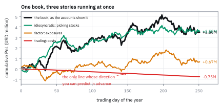
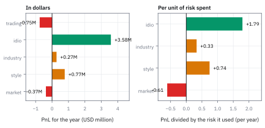
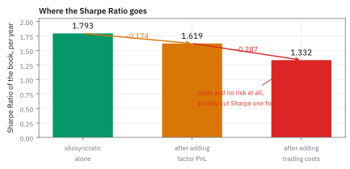

26.6 Performance Attribution: Factor PnL and Idiosyncratic PnL
แยกกำไรขาดทุนที่เกิดขึ้นจริงเป็นส่วนที่มาจากการเทรด จาก factor และจากการเลือกหุ้น แล้วถามว่าแต่ละบรรทัดบอกฝีมือได้แค่ไหน เมื่อทั้งโชคและความคลาดของ model ปนอยู่
รายงานสิ้นปีของพอร์ตหุ้นบอกว่า market −\$0.37 ล้าน style +\$0.77 ล้าน industry +\$0.27 ล้าน ส่วนเฉพาะตัว +\$3.58 ล้าน และต้นทุนการเทรด −\$0.75 ล้าน รวม +\$3.50 ล้าน ผู้จัดการพอร์ตบอกว่า “style ทำเงินมากที่สุดในบรรดา factor ปีหน้าขยายเป็นสองเท่า” ควรทำตามไหม?
ลองตอบก่อนเปิดเฉลย
ไม่ควร ปีเดียวแยก style ออกจากโชคไม่ได้ Sharpe Ratio ที่วัดได้ 0.74 มีความคลาดมาตรฐานราว 1.00 และถ้าเชื่อค่าที่ออกแบบไว้ 0.8 การขยายสองเท่าทำให้ Sharpe Ratio คาดหวังของพอร์ตลดจาก 1.5515 เป็น 1.5087 ขนาดที่ดีที่สุดคือเพิ่มราว 18% ได้แค่ 1.5553 ตัวเลขที่ควรคุยก่อนคือต้นทุนการเทรด −\$0.75 ล้าน ซึ่งกิน Sharpe Ratio 0.287 และเป็นบรรทัดเดียวที่รู้ทิศล่วงหน้า
ภาพรวมก่อนลงสูตร
ปีจบแล้ว บัญชีบอกตัวเลขเดียวว่าได้หรือเสียเท่าไร performance attribution ถามต่อว่าได้เพราะอะไร มีสามแหล่ง แหล่งแรกคือ factor ที่พอร์ตถือ ไม่ว่าจะตั้งใจหรือไม่ แหล่งที่สองคือการเลือกหุ้น ซึ่งคือส่วนเฉพาะตัวของหุ้นที่ถือ แหล่งที่สามคือการเทรดระหว่างงวด ทั้งต้นทุนและจังหวะเข้าออก รายงานนี้มีไว้กันไม่ให้เราหลอกตัวเอง ถ้าปีที่แล้วได้เงินเพราะเดิมพันที่ไม่ได้ตั้งใจถือ นั่นคือข่าวร้ายที่มาในรูปข่าวดี
รูปข้างล่างคือรายงานของ hook ในรูปน้ำตก หน้านี้จะนิยามสามบรรทัด ทำบัญชีสองวันของพอร์ตสี่หุ้นด้วยมือ รวมตารางได้สองทาง แยกฝีมือเลือกหุ้นต่อเป็น selection กับ sizing แล้วกลับมาที่รายงานทั้งปีเพื่อถามว่าตัวเลขแต่ละบรรทัดมีโชคปนแค่ไหน ต้นทุนกิน Sharpe Ratio เท่าไร คำแนะนำเรื่อง style ถูกไหม และสุดท้าย factor return ที่ใช้ทำบัญชีเป็นค่าประมาณ การแบ่งจึงคลาดได้ด้วย
รูป — กำไร \$3.50 ล้านของทั้งปีมาจากไหน
ศัพท์ที่ใช้ในหัวข้อนี้
- Performance attribution
- การไล่ว่ากำไรขาดทุนที่เกิดขึ้นจริงมาจากแหล่งไหน ทำหลังจบงวด ใช้แยกฝีมือออกจาก exposure ที่ถือโดยบังเอิญ และจากต้นทุน และใช้ตัดสินค่าตอบแทนของคนบริหารพอร์ต
- Epoch
- จุดที่ถ่ายภาพพอร์ต เช่นราคาปิดของทุกวัน กำไรขาดทุนระหว่างสอง epoch คือหนึ่งงวดของบัญชี
- Position PnL
- กำไรขาดทุนที่จะได้ถ้าถือพอร์ตตอนต้นงวดนิ่ง ๆ ไปจนจบงวด แยกต่อได้เป็น factor PnL กับ idiosyncratic PnL
- Trading PnL
- กำไรขาดทุนจริงลบ position PnL เก็บทุกอย่างที่การซื้อขายระหว่างงวดทำให้ต่างไป ทั้งต้นทุนและกำไรจากจังหวะเข้าออก
- Selection และ sizing
- สองส่วนของฝีมือเลือกหุ้น selection คืออยู่ถูกฝั่งบ่อยแค่ไหน (ซื้อตัวที่ขึ้น ขายตัวที่ลง) sizing คือลงเงินมากกับเดิมพันที่ถูกหรือเปล่า
- Ex ante และ ex post
- ex ante คือตัวเลขที่คาดไว้ก่อนเกิด เช่นความเสี่ยงและ Sharpe Ratio ที่ออกแบบ ex post คือตัวเลขที่วัดได้หลังเกิด ทั้งหน้านี้เทียบสองอย่างนี้
สัญลักษณ์และหน่วย
| สัญลักษณ์ | ความหมาย | หน่วย |
|---|---|---|
| $\mathbf w_t,\ \mathbf b_t$ | พอร์ตตอนต้นวัน $t$ และ exposure $\mathbf B^{\mathsf T}\mathbf w_t$ | \$ ล้าน |
| $\mathbf r_t,\ \mathbf f_t,\ \boldsymbol\epsilon_t$ | ผลตอบแทนหุ้น factor return และส่วนเฉพาะตัวของวัน $t$ | % |
| $\text{PnL}_t,\ \text{TPnL}_t$ | กำไรขาดทุนที่บัญชีบันทึก และ trading PnL ของวัน $t$ | \$ หรือ \$10,000 |
| $F_t,\ I_t,\ X_t$ | factor PnL, idiosyncratic PnL และ trading PnL ของวัน $t$ | \$10,000 (\$ ล้าน × %) |
| $c,\ v$ | ต้นทุนเฉลี่ยต่อวัน และความผันผวนรายวันของกำไรขาดทุน | \$ ต่อวัน |
| $z_i,\ \tilde w_i$ | ส่วนเฉพาะตัวหารด้วยความผันผวนเฉพาะตัว และเงินที่ถือคูณความผันผวนเฉพาะตัว | ไม่มีหน่วย, \$ ล้าน × % |
| $\hat{\mathbf f}_t,\ \mathbf H,\ \mathbf G$ | factor return ที่ประมาณ, matrix ที่ $\hat{\mathbf f}_t=\mathbf H\mathbf r_t$ และ covariance ของความคลาด | %, ไม่มีหน่วย, %² |
ขั้นที่ 1 — สามบรรทัดของบัญชี
นี่คือนิยาม ไม่ใช่ผลที่พิสูจน์ ถ้าถือพอร์ตต้นวัน $\mathbf w_t$ นิ่ง ๆ ทั้งวันจะได้ $\mathbf w_t^{\mathsf T}\mathbf r_t$ ทุกอย่างที่บัญชีบันทึกต่างจากนั้นคือผลของการซื้อขายระหว่างวัน แล้วแยก $\mathbf w_t^{\mathsf T}\mathbf r_t$ ต่อแบบการอ่านสมการ factor model ทั้งพอร์ต และรวมทุกวัน
บรรทัดที่สองใช้ $\mathbf r_t=\boldsymbol\alpha+\mathbf B\mathbf f_t+\boldsymbol\epsilon_t$ โดย alpha spanned ถูกนับรวมเข้าไปในผลตอบแทนของ factor แล้ว สองก้อนแรกของบรรทัดสุดท้ายรวมกันคือ position PnL ซึ่งคือกำไรที่จะได้ถ้าเทรดได้ทันทีโดยไม่มีต้นทุน ก้อนที่สามเก็บต้นทุนคอมมิชชัน spread ผลกระทบต่อราคา และกำไรจากจังหวะเข้าออกภายในวัน
กรณีสุดขั้วช่วยให้เห็นก้อนที่สาม คนเทรดความถี่สูงที่ปิดสถานะหมดทุกสิ้นวันมี $\mathbf w_t=\mathbf 0$ ทุก epoch position PnL จึงเป็นศูนย์ทั้งหมด แต่กำไรจริงของเขาไม่เป็นศูนย์ ทุกดอลลาร์อยู่ใน trading PnL ทั้งจากการค้นพบราคาระหว่างวัน ส่วนแบ่งของ spread ที่ได้จากการวาง limit order และต้นทุนจากการส่ง market order
ขั้นที่ 2 — บัญชีสองวันของพอร์ตสี่หุ้น
โจทย์ให้อะไรมาบ้าง: วันที่ 1 คือวันเดียวกับตัวอย่างของสมการ factor model พอร์ต (3, −2, 4, −5) \$ ล้าน factor return (0.80, −0.50, 0.30)% ส่วนเฉพาะตัว (0.40, −0.25, 0.15, −0.60)% ตอนปิดตลาดวันที่ 1 โต๊ะลด exposure ต่อ momentum โดยขาย C \$2 ล้าน และซื้อ D คืน \$2 ล้าน ซื้อขายรวม \$4 ล้าน เสียต้นทุน 3 bp (0.03%) คือ \$1,200 พอร์ตวันที่ 2 จึงเป็น (3, −2, 2, −3) วันที่ 2 factor return (−1.00, 0.40, −0.20)% ส่วนเฉพาะตัว (0.10, 0.30, −0.20, 0.05)% บัญชีบันทึก −\$14,200 กับ +\$28,700 หน่วยในบรรทัดคือ \$10,000
คำตอบ: สองวันรวมกัน factor PnL −\$28,800 idiosyncratic PnL +\$44,500 position PnL +\$15,700 trading PnL −\$1,200 รวม +\$14,500 ตรงกับบัญชี $-14{,}200+28{,}700$ การลด momentum ตอนปิดวันที่ 1 ทำให้วันที่ 2 ได้จาก momentum แค่ \$39,200 แทน \$55,200 ที่พอร์ตเดิมจะได้ แต่ก็ลดความเสี่ยงของเดิมพันที่ไม่ได้ตั้งใจถือ (exposure ต่อ market ของพอร์ตใหม่ยังเป็น $3-2+2-3=0$)
ตรวจเองใน 10 วินาที: $X_1$ ต้องเท่ากับต้นทุน $4\times10^6\times0.0003=\$1{,}200$ พอดี เพราะวันที่ 1 ไม่มีการซื้อขายอื่น และ $F+I+X=-2.88+4.45-0.12=1.45$ คือ \$14,500
รูป — บัญชีสองวัน แยกเป็นสามบรรทัด
ขั้นที่ 3 — ตารางเดียว รวมได้สองทาง
factor PnL ของทั้งงวดคือตาราง วันเป็นแถว factor เป็นคอลัมน์ ช่องละ $b_{t,j}f_{t,j}$ รวมตามแถวก่อนได้รายวัน รวมตามคอลัมน์ก่อนได้ราย factor ผลรวมสุดท้ายเท่ากันเพราะเป็นผลบวกของช่องเดียวกัน idiosyncratic PnL ก็รวมรายหุ้นได้แบบเดียวกัน
ราย factor ได้ market \$0, momentum −\$29,800 และ tech +\$1,000 รวม −\$28,800 เท่ากับ $F_1+F_2$ รายหุ้นได้ หุ้น A +\$15,000 หุ้น B −\$1,000 หุ้น C +\$2,000 และหุ้น D +\$28,500 รวม +\$44,500 เท่ากับ $I_1+I_2$ ผู้จัดการพอร์ตอ่านรายวันเพื่อดูว่าวันไหนเจ็บ นักวิจัยอ่านราย factor เพื่อดูว่าเดิมพันไหนเป็นปัญหา ทั้งคู่อ่านตารางเดียวกันคนละทิศ
รวมเป็นกลุ่มได้อีก เช่นรวม style ทุกตัวเป็นบรรทัดเดียว รวม industry ทุกตัวเป็นอีกบรรทัด ซึ่งคือการแบ่งกลุ่มแบบเดียวกับการแบ่งความเสี่ยง แต่ในภาษาของกำไรขาดทุน บัญชีนี้บอกว่า short D คือฝีมือที่ทำเงินที่สุด และเดิมพัน momentum คือสิ่งที่เสียมากที่สุด
ขั้นที่ 4 — ฝีมือเลือกหุ้นแยกต่อเป็น selection กับ sizing
idiosyncratic PnL ยังไม่บอกว่าเก่งแบบไหน ผู้จัดการพอร์ตอาจเก่งเพราะอยู่ถูกฝั่งบ่อย หรือเพราะลงเงินมากกับตัวที่ถูก แยกได้ด้วยอัตราส่วนของวัน คือ idiosyncratic PnL หารด้วยความเสี่ยงเฉพาะตัวของพอร์ต ให้ $z_i=\epsilon_i/\sigma_i$ (ส่วนเฉพาะตัวเทียบกับความผันผวนของตัวเอง) และ $\tilde w_i=\sigma_iw_i$ (ขนาดเดิมพันวัดเป็นความเสี่ยง) ดังนั้น $w_i\epsilon_i=\lvert\tilde w_i\rvert\,x_i$ เมื่อ $x_i=z_i\operatorname{sign}(w_i)$ ซึ่งเป็นบวกเมื่ออยู่ถูกฝั่ง
บรรทัดที่สองคือนิยามของ covariance ข้ามหุ้น $\widehat{\operatorname{cov}}=\frac1n\sum x_iy_i-\bar x\bar y$ ย้ายข้าง บรรทัดสุดท้ายแยกเป็นสามชิ้น $\bar x$ คือ selection ค่าเฉลี่ยว่าอยู่ถูกฝั่งแค่ไหน วัดใน z-score จึงไม่ให้รางวัลหุ้นที่ผันผวนมาก $\lVert\tilde{\mathbf w}\rVert_1/\lVert\tilde{\mathbf w}\rVert_2$ คือ diversification ซึ่งเป็น $\sqrt n$ เมื่อทุกเดิมพันเท่ากัน และเป็น 1 เมื่อมีเดิมพันเดียว (ยกกำลังสองได้จำนวนเดิมพันที่มีผลจริง) ชิ้นสุดท้ายคือ sizing ซึ่งเป็นบวกเมื่อเดิมพันที่ใหญ่คือเดิมพันที่ถูก
วันที่ 1 ของพอร์ตสี่หุ้น: $x=(0.222, 0.114, 0.100, 0.231)$ ทุกตัวบวก อยู่ถูกฝั่งทั้งสี่ selection 0.1667 diversification $28.8/15.922=1.809$ (เดิมพันที่มีผล 3.27 จาก 4) sizing 0.0314 รวม $0.3015+0.0314=0.3329$ ซึ่งเท่ากับ $5.30/15.922$ พอดี วันนี้ฝีมือเกือบทั้งหมดมาจากการอยู่ถูกฝั่ง เดิมพันใหญ่สุดคือ short D ($\tilde w=13.0$) บังเอิญถูกมากที่สุดด้วย sizing จึงบวกเล็กน้อย ถ้า sizing ติดลบเป็นประจำ ผู้จัดการพอร์ตควรลงเงินเท่า ๆ กันทุกตัว
ขั้นที่ 5 — รายงานของทั้งปี
โจทย์ให้อะไรมาบ้าง: ปีจำลอง 251 วันทำการ (ปีที่มีวันธรรมดา 261 วัน หักวันหยุดตลาด 10 วัน) ออกแบบจากพอร์ตในหน้าการแบ่งความเสี่ยง ความผันผวนรายวันของกลุ่ม market, style, industry และเฉพาะตัว 40, 70, 50 และ 120 พันดอลลาร์ correlation ชุดเดียวกัน Sharpe Ratio ที่ออกแบบ 0, 0.8, 0 และ 1.6 ต้นทุนสุ่มเป็นบวกทุกวัน เฉลี่ยวันละ \$3,000 ตัวเลขข้างล่างคือที่ปีจำลองออกมา เป็น \$ ล้าน
คำตอบ: factor PnL +\$0.67 ล้าน position PnL +\$4.25 ล้าน หลังหักต้นทุนเหลือ +\$3.50 ล้าน ส่วนเฉพาะตัวทำเงิน 102% ของทั้งปี แปลว่าถ้าไม่มี factor และไม่มีต้นทุน พอร์ตจะได้มากกว่าที่ได้จริง บรรทัด market เสีย \$0.37 ล้าน ทั้งที่เป็น factor ที่ไม่จ่ายผลตอบแทน ซึ่งการแบ่งความเสี่ยงบอกให้ hedge ออกอยู่แล้ว
ตรวจเองใน 10 วินาที: รูปกำไรสะสมข้างล่างจบปีที่ +3.58, +0.67, −0.75 และ +3.50 ล้าน ตรงกับรูปน้ำตกตอนต้นหน้า สามเส้นแรกรวมกันได้เส้นที่สี่
รูป — กำไรสะสมทั้งปี แยกเป็นสามเส้น

ขั้นที่ 6 — ปีเดียวแยกฝีมือออกจากโชคได้แค่ไหน
เพราะรู้ว่าปีนี้ออกแบบมาอย่างไร จึงคำนวณได้ว่าแต่ละบรรทัดควรได้เท่าไรโดยเฉลี่ย ผลตอบแทนเฉลี่ยรายวันคือ $\text{SR}\,v/\sqrt{251}$ รวม 251 วันได้ $\text{SR}\,v\sqrt{251}$ ส่วนความผันผวนรายปีคือ $v\sqrt{251}$ (variance ของวันที่ไม่สัมพันธ์กันบวกกันได้ ความผันผวนจึงโตตามรากที่สองของจำนวนวัน) แล้วใช้สูตรความคลาดของ Sharpe Ratio กับข้อมูลรายวันหนึ่งปี
style ได้จริง \$0.77 ล้าน ต่ำกว่าค่าเฉลี่ยที่ออกแบบ \$0.89 ล้าน แค่ 0.11 เท่าของความผันผวนรายปี market เสีย \$0.37 ล้าน ห่างจากศูนย์ 0.58 เท่า ส่วนเฉพาะตัวได้ \$3.58 ล้าน สูงกว่าที่ออกแบบ \$3.04 ล้าน 0.28 เท่า ทุกบรรทัดอยู่ในระยะของโชคธรรมดา
บรรทัดสุดท้ายคือความคลาดของ Sharpe Ratio รายปีที่วัดจากข้อมูลรายวัน 251 จุดในหนึ่งปี ได้ราว 1.00 สำหรับทุกบรรทัด Sharpe Ratio 0.74 ของ style จึงแยกไม่ออกจากศูนย์ และแม้ 1.79 ของส่วนเฉพาะตัวก็ห่างจากศูนย์แค่ 1.78 เท่าของความคลาด ปีเดียวคือจุดเริ่มของการคุย ไม่ใช่ข้อสรุป
รูป — ดอลลาร์กับ Sharpe Ratio จัดอันดับไม่เหมือนกัน

ขั้นที่ 7 — ต้นทุนกิน Sharpe Ratio เต็ม ๆ
ต้นทุนแทบไม่แกว่ง วันละ \$3,000 บวกลบราว \$2,121 (การแจกแจง gamma shape 2 scale 1,500 มีส่วนเบี่ยงเบนมาตรฐาน $\sqrt2\times1{,}500$) เทียบกับความผันผวนของพอร์ตวันละ \$159,844 มันจึงลดค่าเฉลี่ยโดยแทบไม่เพิ่มความเสี่ยง ลองคำนวณว่า Sharpe Ratio หายไปเท่าไร
บรรทัดแรกได้จาก $\text{SR}=(\mu-c)\sqrt{251}/v$ เมื่อ $v$ แทบไม่เปลี่ยน ($\mu$ คือผลตอบแทนเฉลี่ยรายวันก่อนหักต้นทุน) ต้นทุนเพิ่มความผันผวนแค่ \$14 ต่อวัน จึงลด Sharpe Ratio ไป 0.297 ตามการออกแบบ ปีจริงลดไป 0.287 ใกล้กันมาก ต่างจากบรรทัดอื่นที่โชคแกว่งได้ ±1.00
นี่ทำให้ต้นทุนเป็นเป้าที่คุ้มที่สุด ลดต้นทุนลงครึ่งหนึ่งได้ Sharpe Ratio คืนมาราว 0.15 แน่นอนกว่าการหา alpha ใหม่ที่ให้ผลเท่ากันมาก
รูป — Sharpe Ratio หายไปที่ไหน

ขั้นที่ 8 — ตอบคำถามเรื่อง style
โจทย์ให้อะไรมาบ้าง: พอร์ตของการแบ่งความเสี่ยง ถ้าคูณขนาดของ style ด้วย $x$ ผลตอบแทนคาดหวังคือ $0.8(70x)+1.6(120)=56x+192$ ส่วน variance คือ $4{,}900x^2+350x+20{,}300$ โดย $350=2(700-525)$ คือช่องไขว้ของ style กับ market และ industry และ 20,300 คือทุกช่องที่ไม่เกี่ยวกับ style
คำตอบ: ขยาย style สองเท่าทำให้ Sharpe Ratio คาดหวังลดจาก 1.5515 เป็น 1.5087 ถึงแม้ความชัน +0.060 ต่อ \$100,000 ที่ได้จากการแบ่งความเสี่ยงจะเป็นบวก เพราะความชันใช้ได้เฉพาะแถว $x=1$ ขนาดที่ดีที่สุดคือ $x^\ast=1.185$ (ตั้งอนุพันธ์ของ $\text{SR}(x)$ เป็นศูนย์ได้ $1{,}103{,}200/931{,}000$) ได้ 1.5553 เพิ่มแค่ 0.004 คำแนะนำคือเพิ่ม style เล็กน้อยได้ แต่สองเท่าไม่ได้ และการตัดสินใจนี้ใช้ Sharpe Ratio ที่ออกแบบ ไม่ใช่ตัวเลขของปีเดียว
ตรวจเองใน 10 วินาที: ที่ $x=2$ variance คือ $4{,}900(4)+350(2)+20{,}300=40{,}600$ และที่ $x=1$ ได้ $4{,}900+350+20{,}300=25{,}550$ ตรงกับความเสี่ยงรวมของพอร์ตนั้น
รูป — ขยาย style แล้ว Sharpe Ratio คาดหวังไปทางไหน
ขั้นที่ 9 — factor return เป็นค่าประมาณ การแบ่งจึงคลาดได้
ในงานจริงไม่มีใครรู้ $\mathbf f_t$ มีแต่ $\hat{\mathbf f}_t=\mathbf H\mathbf r_t$ จาก regression ข้ามหุ้น ซึ่งหน้า Frisch–Waugh–Lovell แสดงว่าคลาดจากค่าจริงด้วย covariance $\mathbf G$ ใส่ค่าประมาณลงในบัญชีของสามบรรทัดแล้วดูว่าความคลาดไปอยู่ที่ไหน (ให้ $\boldsymbol\alpha_\perp=\mathbf 0$ เพื่อให้เห็นชัด)
ความคลาด $\mathbf b_t^{\mathsf T}\mathbf H\boldsymbol\epsilon_t$ เข้าบรรทัด factor ด้วยเครื่องหมายบวก และออกจากบรรทัดเฉพาะตัวด้วยเครื่องหมายลบ เหมือนไม้กระดก ผลรวมจึงถูกเสมอ แต่การแบ่งคลาดได้ และความคลาดของสองบรรทัดสวนทางกันพอดี บรรทัด factor กับเฉพาะตัวที่รายงานจึงมี covariance ติดลบ $-\mathbf b^{\mathsf T}\mathbf G\mathbf b$ ซึ่งเห็นได้จริงในรายงานของพอร์ตที่ exposure คงที่
ข้อนี้อธิบายปริศนาสองข้อที่คนทำรายงานเจอ ข้อแรก factor-mimicking portfolio มีความเสี่ยงเฉพาะตัวแต่ idiosyncratic PnL ที่รายงานเป็นศูนย์ทุกวัน เพราะผลตอบแทนของมันถูกนิยามว่าเป็น factor return ทั้งก้อน ข้อสอง พอร์ตที่ไม่มี exposure ต่อ factor ถ้าเติม factor-mimicking portfolio เข้าไปขนาดเท่าไรก็ตาม idiosyncratic PnL ที่รายงานไม่เปลี่ยนเลย ทั้งที่ความเสี่ยงเฉพาะตัวเปลี่ยน ทางออกคือมอง factor return เป็นค่าประมาณ แล้วรายงาน $\sqrt{\mathbf b^{\mathsf T}\mathbf G\mathbf b}$ คู่กับทุกบรรทัด ในพอร์ตที่สองนี้ความคลาดโตตามขนาดของ factor-mimicking portfolio ที่เติมเข้าไป
ขั้นที่ 10 — ถ้าประมาณ factor return จากสี่หุ้นนี้เอง
โจทย์ให้อะไรมาบ้าง: วันที่ 1 ของบัญชีสองวัน ถ้า risk model ประมาณ factor return ด้วย WLS จากหุ้นสี่ตัวนี้เอง (ความผันผวนเฉพาะตัว 1.80%, 2.20%, 1.50%, 2.60%) จะได้ $\hat{\mathbf f}_1$ และ $\mathbf G$ ชุดที่คำนวณในหน้า Frisch–Waugh–Lovell exposure คือ $\mathbf b_1=(0, 13.8, 1)$ หน่วยคือ \$10,000
คำตอบ: รายงานจะบอกว่า factor เสีย \$12,464 และการเลือกหุ้นเสีย \$536 ทั้งที่ค่าจริงคือ −\$66,000 กับ +\$53,000 ความคลาด \$53,536 ย้ายจากบรรทัดเฉพาะตัวไปบรรทัด factor ขนาดนี้ไม่แปลก ส่วนเบี่ยงเบนมาตรฐานของความคลาดคือ \$154,148 ต่อวัน กับหุ้นสี่ตัว ถ้าประมาณจากหุ้น 400 ตัวที่ loading และความผันผวนซ้ำชุดเดิม $\mathbf G$ หาร 100 จึงเหลือ \$15,415 ต่อวัน ยังใหญ่พอจะบิดรายงานรายวันได้ แต่ความคลาดของแต่ละวันไม่เกี่ยวกัน ผลรวมทั้งปีจึงโตแค่ $\sqrt{251}$ เท่า ไม่ใช่ 251 เท่า
ตรวจเองใน 10 วินาที: $\hat F_1+\hat I_1=-1.2464-0.0536=-1.30$ เท่ากับ $F_1+I_1=-6.60+5.30$ ผลรวมไม่เคยผิด ผิดได้แค่การแบ่ง
รูป — ค่าที่รายงานกับค่าจริง และช่วงความคลาด
ความผิดที่ทำให้รายงานชี้ผิดที่
อ่านบรรทัดดอลลาร์ที่ใหญ่ที่สุดว่าเป็นฝีมือ: style ทำเงินมากที่สุดในบรรดา factor แต่ Sharpe Ratio 0.74 มีความคลาดราว 1.00 และการขยายสองเท่าทำให้ Sharpe Ratio คาดหวังของพอร์ตลดจาก 1.5515 เป็น 1.5087
ลืมบรรทัด trading: รายงานที่มีแค่ position PnL บอกว่าได้ \$4.25 ล้าน ทั้งที่บัญชีได้ \$3.50 ล้าน และ Sharpe Ratio 1.619 แทน 1.332 ต้นทุนหายไปจากการคุยทั้งที่มันคือเป้าที่คุ้มที่สุด
เปลี่ยนแบบของ model กลางปี: rotation ย้ายกำไรขาดทุนระหว่าง factor ได้ บรรทัด momentum ของวันเดียวกันเป็น −\$69,000 หรือ −\$61,272 ขึ้นกับแบบ ถ้าเปลี่ยนกลางปีแล้วเทียบก่อนกับหลัง จะสรุปผิดทั้งที่โลกไม่ได้เปลี่ยน
รายงานการแบ่งโดยไม่มีความคลาด: factor return ที่ประมาณจากหุ้นน้อยย้ายเงิน \$53,536 จากการเลือกหุ้นไปเป็น factor ในวันเดียว บรรทัด factor กับเฉพาะตัวที่วัดได้จึงสวนทางกันเสมอ ต้องรายงาน $\sqrt{\mathbf b^{\mathsf T}\mathbf G\mathbf b}$ คู่กัน ถ้าปีนั้นเฉพาะตัวติดลบ ให้ดูก่อนว่าศูนย์อยู่ในช่วงความคลาดไหม
ใช้ทำอะไรบนโต๊ะจริง
รายงานรายเดือนของโต๊ะหุ้นมีบรรทัด trading, กลุ่ม factor (market, style, industry) และเฉพาะตัว แต่ละบรรทัดมีสามคอลัมน์ คือดอลลาร์ ความผันผวนที่ใช้ และอัตราส่วนของสองอย่างนั้น คอลัมน์ที่สามใช้ตัดสินใจ บรรทัดเฉพาะตัวพร้อมความคลาดใช้คุยเรื่องค่าตอบแทน เพราะกำไรจาก factor ซื้อได้ถูกจากที่อื่น และบรรทัด trading ใช้คุยกับทีมเทรดเรื่องต้นทุน หลังจบงวดยังดูพอร์ตผ่าน risk model อื่นได้อิสระ เช่น model ทั้งโลกที่เห็น exposure ข้ามประเทศ เพราะรายงานย้อนหลังไม่ต้องผูกกับ model ที่ใช้สร้างพอร์ต
โจทย์ตรวจความเข้าใจ
1. ในบัญชีสองวัน ถ้าวันที่ 2 บัญชีบันทึก +\$28,100 แทน +\$28,700 trading PnL ทั้งงวดและกำไรรวมเป็นเท่าไร
เฉลย
$X_2=28{,}100-28{,}700=-\$600$ trading PnL ทั้งงวด $-1{,}200-600=-\$1{,}800$ กำไรรวม $15{,}700-1{,}800=\$13{,}900$ ตรงกับบัญชี $-14{,}200+28{,}100$ บรรทัด factor และเฉพาะตัวไม่เปลี่ยน
2. กลยุทธ์หนึ่งวัด Sharpe Ratio ได้ 1.0 จากข้อมูลรายวัน ต้องใช้กี่ปีความคลาดของ Sharpe Ratio ถึงจะเหลือ 0.5
เฉลย
ความคลาดคือ $\sqrt{(1+\text{SR}^2/(2q))/T}$ เมื่อ $q=251$ จุดต่อปีและ $T$ ปี ต้องการ $\sqrt{(1+1/502)/T}=0.5$ จึง $T=(1+1/502)/0.25=4.008$ ปี ราวสี่ปี และช่วงสองเท่าของความคลาดยังกว้าง 0 ถึง 2
3. วันที่ 2 ของบัญชีสองวัน พอร์ต (3, −2, 2, −3) ส่วนเฉพาะตัว (0.10, 0.30, −0.20, 0.05)% ความผันผวนเฉพาะตัวชุดเดิม selection ของวันนั้นเป็นบวกหรือลบ
เฉลย
$z=(0.10/1.80, 0.30/2.20, -0.20/1.50, 0.05/2.60)=(0.0556, 0.1364, -0.1333, 0.0192)$ คูณเครื่องหมายของ $\mathbf w$ $(+,-,+,-)$ ได้ $x=(0.0556, -0.1364, -0.1333, -0.0192)$ selection $=(0.0556-0.1364-0.1333-0.0192)/4=-0.0583$ ติดลบ อยู่ผิดฝั่งสามในสี่ตัว ตรงกับ idiosyncratic PnL −\$8,500 ของวันนั้น
คำนวณซ้ำด้วย JavaScript
เปิดดูโค้ด
รันใน Node.js ได้โดยไม่ต้องติดตั้งอะไร โค้ดทำบัญชีสองวันแยกเป็นสามบรรทัดพร้อมรวมราย factor และรายหุ้น แยก selection กับ sizing คำนวณค่าที่ออกแบบของปีจำลอง ความคลาดของ Sharpe Ratio ต้นทุนที่กิน Sharpe Ratio การปรับขนาด style และการแบ่งที่ได้เมื่อใช้ factor return ที่ประมาณจากสี่หุ้น
const {sqrt, abs, sign} = Math;
const dot = (a, b) => a.reduce((s, v, i) => s + v * b[i], 0);
const transpose = A => A[0].map((_, j) => A.map(row => row[j]));
const matVec = (A, x) => A.map(row => dot(row, x));
const UNIT = 1e4; // one million dollars times 1% is 10,000 dollars
// Attribution ledger: positions held at the start of each day, factor and idiosyncratic returns, recorded PnL.
function attribute(B, days) {
if (!Array.isArray(B) || !B.length || !Array.isArray(days) || !days.length) throw new TypeError('Need loadings and at least one day');
const n = B.length, m = B[0].length, Bt = transpose(B);
const byFactor = new Array(m).fill(0), byStock = new Array(n).fill(0);
const rows = days.map(({w, f, eps, recorded}) => {
if (w.length !== n || eps.length !== n || f.length !== m) throw new RangeError('Each day needs n positions, n idiosyncratic returns and m factor returns');
if (!Number.isFinite(recorded)) throw new TypeError('Each day needs the recorded PnL');
const b = matVec(Bt, w);
b.forEach((x, j) => { byFactor[j] += x * f[j] * UNIT; });
w.forEach((x, i) => { byStock[i] += x * eps[i] * UNIT; });
const factor = dot(b, f) * UNIT, idio = dot(w, eps) * UNIT;
return {b, factor, idio, position: factor + idio, trading: recorded - factor - idio, recorded};
});
const sum = key => rows.reduce((s, r) => s + r[key], 0);
return {rows, byFactor, byStock, factor: sum('factor'), idio: sum('idio'), position: sum('position'), trading: sum('trading'), total: sum('recorded')};
}
// One-day information ratio split into selection x diversification + sizing.
function selectionSizing(w, eps, sig) {
const n = w.length;
if (eps.length !== n || sig.length !== n || !sig.every(s => s > 0)) throw new RangeError('Need matching positions, returns and positive volatilities');
const x = eps.map((e, i) => e / sig[i] * sign(w[i])), size = w.map((v, i) => abs(v * sig[i]));
const mx = x.reduce((s, v) => s + v, 0) / n, my = size.reduce((s, v) => s + v, 0) / n;
const l1 = size.reduce((s, v) => s + v, 0), l2 = sqrt(dot(size, size));
const cov = dot(x, size) / n - mx * my;
return {selection: mx, diversification: l1 / l2, sizing: n * cov / l2, ir: dot(w, eps) / l2};
}
// One year of the risk-decomposition book as designed: expected dollars per line, and the cost drag on the Sharpe Ratio.
function designYear(vols, sharpes, bookVol, costPerDay, days) {
if (!(days > 1) || !(bookVol > 0) || !(costPerDay >= 0)) throw new RangeError('Need days > 1, a positive book volatility and a non-negative cost');
const root = sqrt(days);
const expected = vols.map((v, i) => sharpes[i] * v * root), annualVol = vols.map(v => v * root);
const positionSharpe = dot(sharpes, vols) / bookVol;
return {expected, annualVol, cost: costPerDay * days, positionSharpe, drag: costPerDay * root / bookVol, bookSharpe: positionSharpe - costPerDay * root / bookVol};
}
// Standard error of an annual Sharpe Ratio estimated from q observations a year over T years.
const sharpeSE = (sr, q, years) => sqrt((1 + sr * sr / (2 * q)) / years);
// Sharpe of the risk-decomposition book when the style group is scaled by x.
function sharpeWithStyle(x) {
const v = [40, 70, 50, 120], C = [[1, 0.25, 0.45, 0], [0.25, 1, -0.15, 0], [0.45, -0.15, 1, 0], [0, 0, 0, 1]], sr = [0, 0.8, 0, 1.6];
const vs = v.map((q, i) => q * (i === 1 ? x : 1));
let variance = 0;
for (let i = 0; i < 4; i++) for (let j = 0; j < 4; j++) variance += C[i][j] * vs[i] * vs[j];
return dot(sr, vs) / sqrt(variance);
}
function inverse(A) {
const n = A.length, M = A.map((row, i) => [...row, ...row.map((_, j) => (i === j ? 1 : 0))]);
for (let c = 0; c < n; c++) {
let p = c;
for (let i = c + 1; i < n; i++) if (abs(M[i][c]) > abs(M[p][c])) p = i;
if (abs(M[p][c]) < 1e-12) throw new RangeError('Loadings are collinear');
[M[c], M[p]] = [M[p], M[c]];
const piv = M[c][c];
for (let j = 0; j < 2 * n; j++) M[c][j] /= piv;
for (let i = 0; i < n; i++) if (i !== c) { const g = M[i][c]; for (let j = 0; j < 2 * n; j++) M[i][j] -= g * M[c][j]; }
}
return M.map(row => row.slice(n));
}
const B = [[1, 1.2, 1], [1, -0.4, 1], [1, 0.6, 0], [1, -1.4, 0]];
const day1 = {w: [3, -2, 4, -5], f: [0.80, -0.50, 0.30], eps: [0.40, -0.25, 0.15, -0.60]};
const day2 = {w: [3, -2, 2, -3], f: [-1.00, 0.40, -0.20], eps: [0.10, 0.30, -0.20, 0.05]};
const traded = day2.w.reduce((s, x, i) => s + abs(x - day1.w[i]), 0), cost = traded * 1e6 * 0.0003;
day1.recorded = dot(day1.w, matVec(B, day1.f).map((x, i) => x + day1.eps[i])) * UNIT - cost;
day2.recorded = dot(day2.w, matVec(B, day2.f).map((x, i) => x + day2.eps[i])) * UNIT;
const ledger = attribute(B, [day1, day2]);
const sig = [1.80, 2.20, 1.50, 2.60];
const skill1 = selectionSizing(day1.w, day1.eps, sig), skill2 = selectionSizing(day2.w, day2.eps, sig);
const year = designYear([40e3, 70e3, 50e3, 120e3], [0, 0.8, 0, 1.6], sqrt(25550) * 1e3, 3000, 251);
const realized = [-0.37e6, 0.77e6, 0.27e6, 3.58e6], realizedSharpe = [-0.61, 0.74, 0.33, 1.79];
// Best style scale: maximise the Sharpe over a fine grid, then compare with doubling.
let bestX = 0, best = -Infinity;
for (let k = 0; k <= 30000; k++) { const x = k / 10000, s = sharpeWithStyle(x); if (s > best) { best = s; bestX = x; } }
// Attribution with factor returns estimated by WLS from the same four stocks: f^ = f + H eps.
const W = sig.map(s => 1 / (s * s));
const BtW = transpose(B).map(col => col.map((v, i) => v * W[i]));
const G = inverse(BtW.map(row => transpose(B).map(col => dot(row, col))));
const H = G.map(row => transpose(BtW).map(col => dot(row, col)));
const r1 = matVec(B, day1.f).map((x, i) => x + day1.eps[i]), fhat = matVec(H, r1), b1 = matVec(transpose(B), day1.w);
const errVar = dot(b1, matVec(G, b1));
console.log(JSON.stringify({
traded, cost, ledger: {rows: ledger.rows.map(r => ({factor: r.factor, idio: r.idio, trading: r.trading, recorded: r.recorded})),
byFactor: ledger.byFactor, byStock: ledger.byStock, factor: ledger.factor, idio: ledger.idio, position: ledger.position, trading: ledger.trading, total: ledger.total},
skill: {day1: skill1, day1Check: skill1.selection * skill1.diversification + skill1.sizing, day2: skill2},
year: {...year, expectedTotal: year.expected.reduce((s, x) => s + x, 0) - year.cost,
z: realized.map((x, i) => (x - year.expected[i]) / year.annualVol[i]), impliedVol: realized.map((x, i) => x / realizedSharpe[i])},
se: realizedSharpe.map(s => sharpeSE(s, 251, 1)), realizedDrop: 1.619 - 1.332,
style: {today: sharpeWithStyle(1), doubled: sharpeWithStyle(2), bestX, best},
measured: {fhat, factor: dot(b1, fhat) * UNIT, idio: (dot(day1.w, r1) - dot(b1, fhat)) * UNIT, errorSD: sqrt(errVar) * UNIT, errorSD400: sqrt(errVar / 100) * UNIT, errVar}
}));สิ่งที่ควรตอบได้หลังอ่าน
- กำไรจริงแยกเป็น trading PnL (จริงลบ $\mathbf w_t^{\mathsf T}\mathbf r_t$) กับ position PnL ซึ่งแยกต่อเป็น factor $\mathbf b_t^{\mathsf T}\mathbf f_t$ และเฉพาะตัว บัญชีสองวันได้ −\$28,800, +\$44,500 และ −\$1,200 รวม +\$14,500
- ตาราง factor PnL รวมตามวันหรือตาม factor ได้ผลเท่ากัน idiosyncratic PnL รวมรายหุ้นได้แบบเดียวกัน และแยกต่อเป็น selection × diversification + sizing ได้ (วันที่ 1: $0.1667\times1.809+0.0314=0.333$)
- Sharpe Ratio ของปีเดียวคลาดราว 1.00 style ที่ 0.74 จึงแยกจากศูนย์ไม่ได้ และตามการออกแบบ ขยาย style สองเท่าลด Sharpe Ratio จาก 1.5515 เป็น 1.5087
- ต้นทุนแทบไม่เพิ่มความเสี่ยง จึงลด Sharpe Ratio ตรง ๆ $c\sqrt{251}/v=0.297$ ตามการออกแบบ และ 0.287 ในปีจริง
- factor return ที่ประมาณย้ายความคลาด $\mathbf b^{\mathsf T}\mathbf H\boldsymbol\epsilon$ จากบรรทัดเฉพาะตัวไปบรรทัด factor ผลรวมถูกเสมอ การแบ่งคลาดได้ $\sqrt{\mathbf b^{\mathsf T}\mathbf G\mathbf b}$ ซึ่งต้องรายงานคู่กันทุกครั้ง
บทนี้ใช้ factor model ราวกับว่า loading, factor return และ covariance มีให้พร้อม บทถัดไปสร้างมันขึ้นจากข้อมูลจริง เริ่มที่ regression ข้ามหุ้นและ loadings ที่ rank ไม่เต็ม ซึ่งหา factor return ของทุกวัน และเจอสมการที่มีคำตอบนับไม่ถ้วนตั้งแต่วันแรก